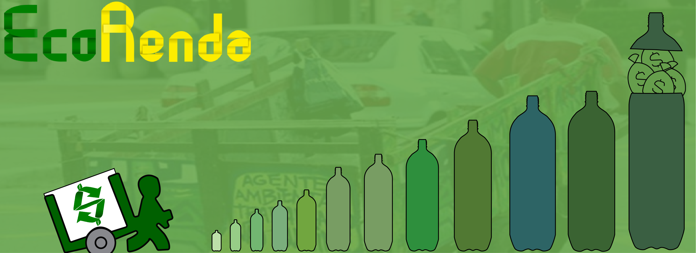

O EcoRenda surgiu na disciplina de projeto integrado no curso de Design Digital,
o projeto tem como objetivo, a inclusão social e digital de agentes ambientais por meio
de um sistema digital adaptado para os mesmos, com intuito de ensinar o confeccionamento
de objetos utilitários feito com materiais recicláveis para se tornarem objetos comerciáveis.
O projeto foi desenvolvido para funcionar em uma empresa de compra e revenda resíduos sólidos
(ReciclaNordeste), a empresa com o projeto, teria um novo seguimento de negócios de compras e
revendas dos resíduos, agora com valor agregado ao objetos confeccionados pelos agentes ambientais.
Para a inclusão digital e aprendizado dos agentes serem feitas, a empresa investiria em tablets
que viriam com o sistema já adaptado para os mesmos. O projeto tem potencial para funcionar em
ongs e cooperativas, que buscam um maior lucro no desenvolvimento sustentável, e querem cooperar
com desenvolvimento social.
Para o projeto foram desenvolvidos varios materiais digitais, como banners, video conceitual e
documentos como plano executivo e etc...Conheça alguns desse materiais na pagina do Facebook clicando na imagem:

Em uma pesquisa elabora pela equipe da EcoRenda foram descobertas alguns dados interessantes um deles é sobre a Idade dos catadores. Os resultados do questionário mostram que 71,43% dos entrevistados tem entre 50 ou mais anos de idade, enquanto apenas 14,29% possui entre 26 e 36 anos de idade e 14,29% entre 42 a 49 anos de idade. Pode-se se dizer que maioria dos catadores entrevistados, possuem 50 ou mais anos de idade.
| Catadores entrevistados | Idade |
|---|---|
| João Victor | 50 |
| Max Calado | 65 |
| Luiz Fernando | 75 |
| José da Silva | 70 |
| Mario Filho | 60 |
| Hugo Cesar | 45 |
| Leandro Nascimento | 28 |
A tabela apresenta nome de personas para proteger a identidade dos entrevistados